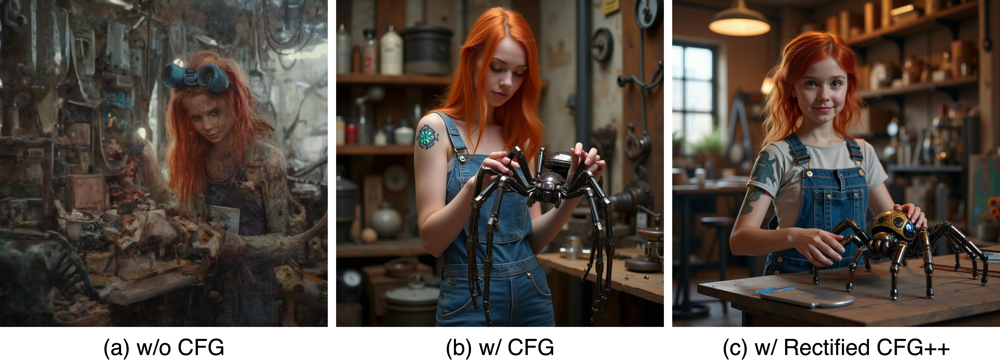
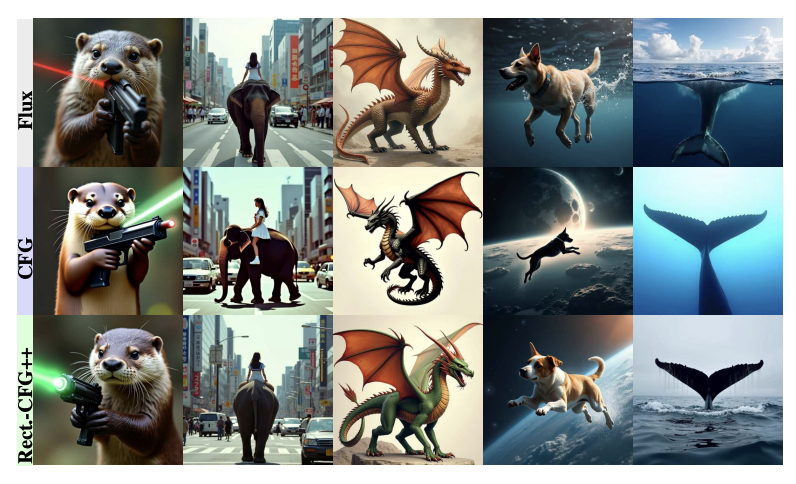
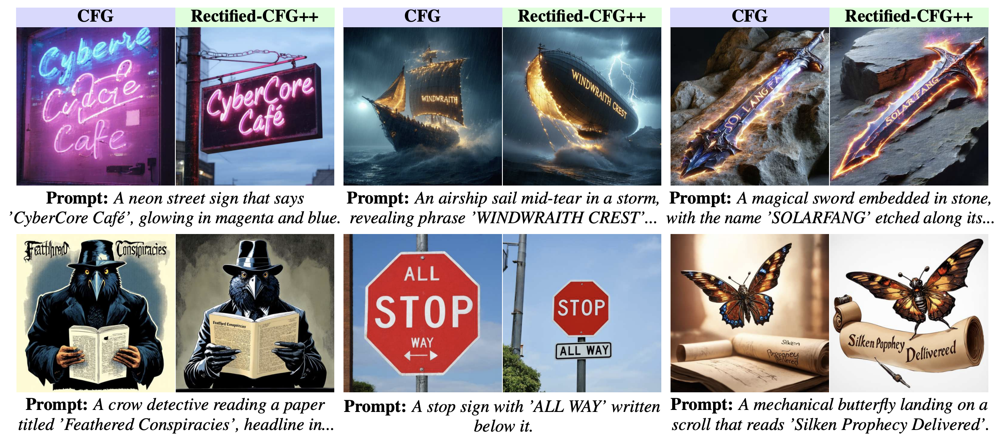
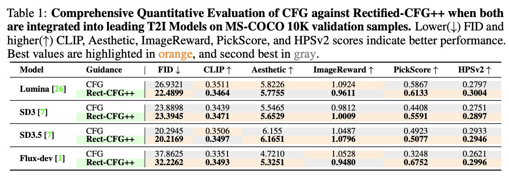
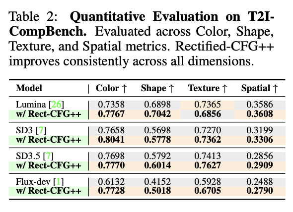
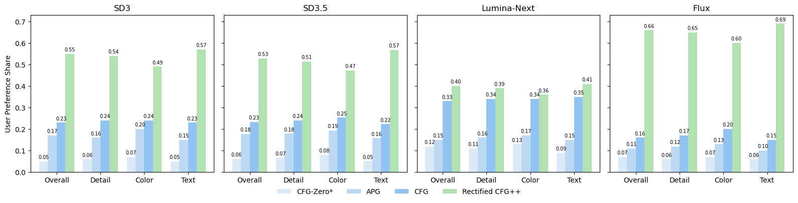
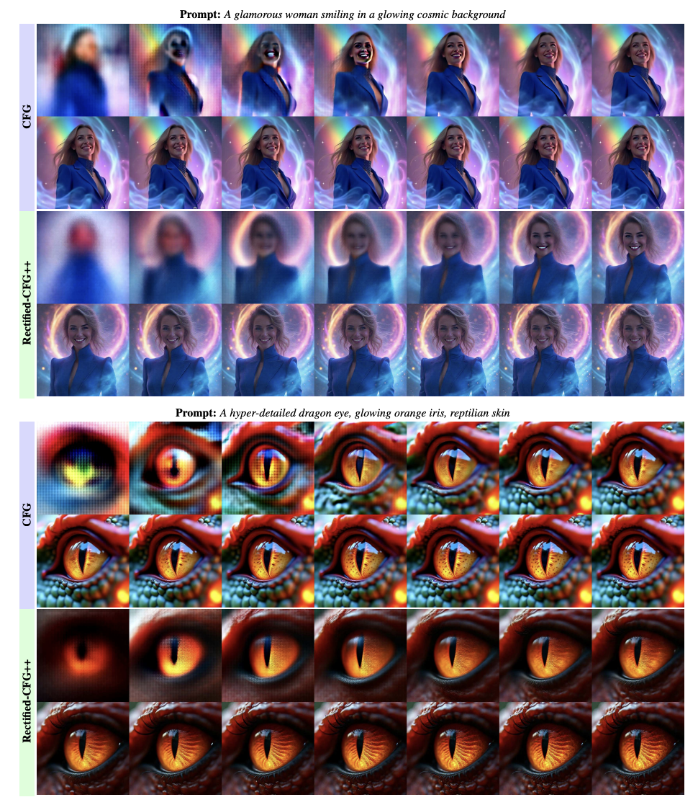

Rectified-CFG++ for Flow Based Models
Shreshth Saini, Shashank Gupta, Alan C. Bovik
The University of Texas at Austin
{saini.2, shashank.gupta}@utexas.edu
[Paper]
[ArXiv]
[Code]
Accepted: NeurIPS 2025
Rectified-CFG++ is a training-free, geometry-aware guidance scheme for flow-based text-to-image models.
By replacing the naïve extrapolation of classifier-free guidance with a predictor–corrector
integrator that stays on the learned data manifold, we eliminate structural
artifacts while improving prompt alignment, generation quality and sampling efficiency.

Geometric interpretation of our method
Abstract
Classifier-free guidance (CFG) is the workhorse for steering large diffusion models toward
text-conditioned targets, yet its naïve application to rectified-flow (RF) based models provokes
severe off-manifold drift, yielding visual artifacts, text misalignment, and brittle behaviour.
We present Rectified-CFG++, an adaptive predictor–corrector guidance that couples
the deterministic efficiency of rectified flows with a geometry-aware conditioning rule.
Each inference step first executes a conditional RF update to stay on the learned transport
path, then applies a scheduled interpolation between conditional and unconditional velocity
fields. We prove marginal consistency and bounded on-manifold trajectories, ensuring
stability across guidance strengths. Extensive experiments on large-scale RF backbones
(Flux, Stable Diffusion 3/3.5, Lumina) show that Rectified-CFG++ consistently outperforms
standard CFG on FID, CLIP-Score, ImageReward, Aesthetic Score, and HPS-v2—while
reducing artifacts and accelerating convergence.

Figure: Visual comparison showing the improvements achieved by Rectified-CFG++ over standard CFG.
Qualitative Results
Our method produces higher quality images with better text alignment and fewer artifacts compared to standard CFG.
We demonstrate improvements across various aspects of visual quality and generation fidelity.

High-quality samples generated using Rectified-CFG++

No Guidance vs. CFG vs. Rectified-CFG++

Quantitative comparison on Flux model
Text Legibility in Generated Images
One of the key advantages of Rectified-CFG++ is the significant improvement in text legibility within generated images.
Standard CFG often produces blurry, distorted, or illegible text due to off-manifold drift, while our method
maintains sharp, readable text by preserving manifold trajectories.

Figure: Comparison of text legibility in generated images. Rectified-CFG++ produces sharper, more readable text compared to standard CFG.
Key Improvements in Text Generation:
- Character Clarity: Individual letters are more distinct and properly formed
- Font Consistency: Better preservation of intended font styles and weights
- Spatial Arrangement: Improved text positioning and alignment within scenes
- Context Integration: Text appears more naturally integrated with surrounding visual elements
Quantitative Evaluation
We conduct extensive quantitative evaluation across multiple benchmarks and metrics to demonstrate
the effectiveness of our approach. Our results show consistent improvements across all evaluation criteria.

Comprehensive evaluation on COCO-10k dataset

Results on T2I-CompBench evaluation
The evaluation spans multiple aspects of generation quality:
- Perceptual Quality: FID and Aesthetic Score improvements across all model architectures
- Text Alignment: Enhanced CLIP scores indicating better prompt adherence
- Human Preference: Superior ImageReward and HPS-v2 scores reflecting human aesthetic preferences
- Compositional Understanding: Better performance on complex multi-object and spatial relationship prompts
- Efficiency: Faster convergence requiring 20-30% fewer function evaluations
User Study
Human evaluation demonstrates the preference for our method across different quality aspects.

Figure: User study results showing human preference for Rectified-CFG++.
Intermediate Trajectories
Analysis of intermediate generation trajectories showing improved stability and convergence.

Figure: Visualization of intermediate generation trajectories comparing CFG vs Rectified-CFG++.
BibTeX
@inproceedings{saini2025rectifiedcfgpp,
title = {Rectified-CFG++ for Flow Based Models},
author = {Shreshth Saini and Shashank Gupta and Alan C. Bovik},
booktitle = {Advances in Neural Information Processing Systems (NeurIPS)},
year = {2025}
}
Acknowledgements: Code to be released upon publication. We thank the Flux, Stable Diffusion
and Lumina teams for open‐source models and data.